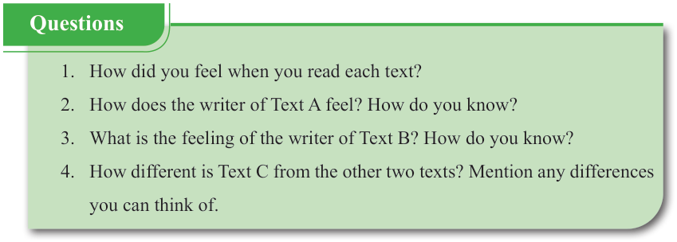

English for Secondary Schools Student’s Book Form One, printed page 163

Question box with four prompts: how the reader felt after each text, how the writer of Text A feels and why, what feeling the writer of Text B has and why, and how Text C differs from the other two texts.Questions
-
1.
How did you feel when you read each text?
-
2.
How does the writer of Text A feel? How do you know?
-
3.
What is the feeling of the writer of Text B? How do you know?
-
4.
How different is Text C from the other two texts? Mention any differences you can think of.
 Do You Know?
Do You Know?DO YOU KNOW?
The three texts in (a) have different tones and registers. Tone is the attitude or feelings a writer has about the topic he/she intends to write on. The tone in the writing is not different from that of one’s voice. Every word one uses and every sentence structure shows tone. Register is the level of formality or the use of language according to the contexts such as formal and informal contexts. These contexts dictate how language is used to suit the expectations and norms of a particular audience or situation.
(b) Read the following poem and answer the questions that follow.